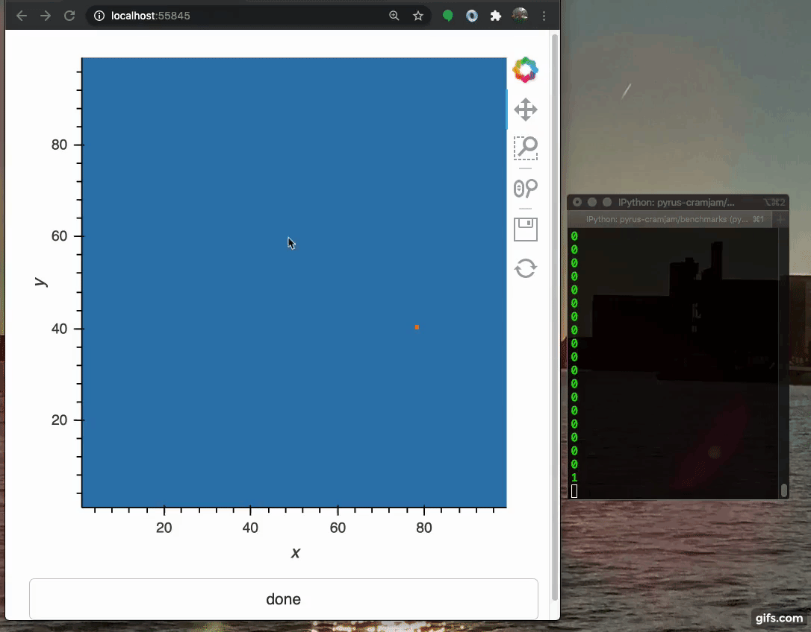

The simplest new streamz plugin
TL;DR: streamz-q demonstrates a very simple streamz source plugin, and shows how the user can now be a source of events for real-time processing and machine learning.

Streamz is...
Streamz is a real-time event processing framework for python. It enables complex graph logic, and can accumulate events data into dataframes and for hand-off to Dask. By using async concurrency, streamz handles backpressure and timing operations with very little overhead or latency.
So far, sources of events for streamz have come from
- disk state, such as streaming from a single text file, watching for new files in a directory or from a pipe to a process
- acting as a server, responding to HTTP or TCP traffic
- an events framework such as kafka or redis-streams
- arbitrary periodic functions, usually polling some resource such as a server or capture device.
One obvious source of events which has so far been overlooked is the user interface, such as mouse
movements. Here I demonstrate
a very simple streamz source, with examples of how I can feed it from a holoviews plot (i.e., browser events)
or a Qt widget (i.e., desktop events.). Since user-facing interfaces already have internal event loops,
I just need a way to pass events between the UI thread, and the streamz thread.
Plugin
The plugin code, simplified, looks this.
class from_q(streamz.Source): def __init__(self, q, sleep_time=0.01, **kwargs): """ :param q: threading.Queue Any items pushed into here will become streamz events """ ... async def _run(self): try: out = self.q.get_nowait() await self.emit(out, asynchronous=True) except queue.Empty: await asyncio.sleep(self.sleep)
As events appear in the given Queue, q, they will be emitted into the pipeline. If there are no
events, I wait a little bit. Unfortunately, there appears to be no simple way to await the state of q -
using q.get() would block the thread and event loop (and any other streamz tasks concurrently running). Note
that I await the call to emit, to respect any backpressure from downstream.
Note that, due to the "entrypoints" specification in the setup.py, installing the package makes
streamz.Stream.from_q available without having to explicitly import it.
Holoviews
Holoviews is an interactive plotting library for the browser, built on Bokeh,
and allowing dynamic updating of plot data. Panel is the UI component with
widgets, layouts and callbacks.
Although the bokeh/holoviews server runs on Tornado, callbacks are blocking (not async), so if you want to also run concurrent processing, you need two threads. The example shows this in action: holoviews creates and display the plot in the browser, and passes mouse movements to streamz. In this particular case, I choose to make streamz update the plot to show where the movement events ocurred.

There were a few subtleties to make this work
- I start the server and its event loop manually, so I can store the objects and later shut them down
- I update an attribute
counterpurely so I can trigger evens that will always have a new data value - I recreate the image each time; I could have updated a curve's data in-place, which involves less communication; so I choose to update only once per second
Holoview could have done this without streamz, probably. However, I also show a printout of streamz's processing
rate, events/s. The bottleneck, here, is the events being generated by the browser not in streamz (as can be seen in the
next section). The streamz pipeline to get the event rate is from_q(q).timed_window(1).map(len).sink(print);
this contains no interesting branching logic.
Qt
I repeated the exercise for PyQt, as a desktop application. Qt has its own event loop, implemented in C++, which must run on the main thread.
I didn't bother with graphical output this time, only
the event rate. For Qt, you can easily reach >130events/s, possibly because of finer-grained sensitivity to
mouse movements at the screen's native resolution. The only real code in this version is to capture
the mouseMoveEvent of a QWidget (note that this actually responds to dragging, with the mouse pressed).
Summary
The new source plugin trivially passes events to streamz from other threads. This enables hooking into other eventing systems with their own event loops. The trivial examples for the browser and GUI application may spur others to make more interesting applications. For example, it would be natural to feed filtered events to River for on-line real-time machine learning of users' behaviour. Imagine streamz feeding River!
EDIT
With the new ReactiveHTML component in Panel, it will be possible to respond to arbitrary DOM events
(thanks for the example, @philippjfr )
class Image(ReactiveHTML): src = param.String() _html = '<img id="img" src="${src}"></img>' img = Image(src='dice.png', width=500, height=400) img.on_event('img', 'mousemove', q.put)
EDIT
ipywidgets should be trivial to support with the same mechanism.